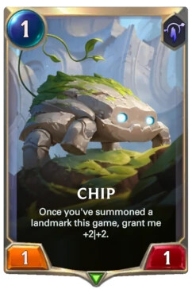

Eh? I thought her pushes were genuine? I mean, they’re really a null to me.
I dislike your Aelin vote, Chloe.
Why?
Not sure yet.
i dont know if shes having a bad week or something but she has the most monotone iso on this goddamn planet and it feels like shes a straight up robot
i dont feel
anything
she just exists
its an empty nothingburger iso
why is she not getting put under the spotlight and pushed and shoved by wolves
1 Like
idc
1 Like
i’ll figure out how much i believe my read after i sleep on it
but i think issa hit tbh

Watch out for what you say, they might be offended.
I’m back! Anything new? (Sorry I’m still very bad at knowing which way to catch up effectively)
1 Like
Chloe! You’re here! Any new reads since last time or any progression on Helz/Guill?
1 Like
Hi!
I’m coming around on both Helz and Guill but definitely need to sleep on it
I’ve been in thread too long and I’m echo chambering in my own head which isnt helping much
I think min is a villager
I think aelin is a wolf
Both of these are explained in my recent posts
I’m honestly about to fall asleep bc im exhausted, sorry
Good night 
1 Like
I’m with you on min, I forgot about it but remembered after seeing Helz’ doc. She had a towny push on me d2.
No idea who Aelin is, so I should probably look that up
1 Like
Read through Aelin’s ISO. Not w/w with Wiisp/Luku/Min but they are all likely town anyway.
All right I’ll vibe.
I also agree that there is at least one wolf, possibly two, on the Tilg wagon. Out of everyone on that wagon, I would look at re-evaluating or examining Nikamura, Zone, and Aelin.
I’ll need you to explain your Zone and Aelin reads - Zone has been kind of a massive blind spot this game for me because they are on at weird times and not many of their posts have moved the needle for me one way or another. I liked Aelin Yesterday because of their case on Wisp, but they have… somewhat dropped off today, plus it’s compounded by Wisp claiming Babysitter.
I was really trying to read into her posts on Day 2, but I couldn’t really come up with anything. I stuck to my Tilg vote because I thought this post was a potential mindset slip:
Talk to me about how I have been letting you steer the thread/encouraged you to lead the town? I thought I’ve been pretty aggressive about using you as a rock to guide my reads of specific players (min, for example) but I don’t think I’ve ever done either of the things you’ve said.
?
How was it opportunistic? I literally said that I got cold feet on Blitz because of their reactions to my questions at EoD, and I voted Tilg because I thought they mindset slipped + you wanted people to vote for them. You telling me to vote Tilg at EoD yesterday then shading my vote as opportunistic here is kinda skeeving me out, not gonna lie.
This, I can see. I had Helz as one of the townreads I was considering re-evaluating. I previously liked his process with regards to Lukundo, but I think it is fakeable and his posts/stance today I am not particularly favorable of.
I have liked Merc’s posts at SoD3. I also think if Merc is scum, her team doesn’t kill Kaif in the night based on how Merc tied her entire D2 identity into pushing him.
Luk, can you talk to me about why your townread on me is so strong? I honestly don’t understand and/or forgot you talking about your read on me. Not really sure why people are townreading me right now tbh (though this was 1000 posts ago, so)
Could you talk to me about Zone’s scum/town meta more in-depth? I barely have any experience with him as a player.
–
I’ve enjoyed Chloe’s posts since they replaced in, but one thing that I am unsure comes from Chloe wolf is this line:
I don’t know their meta, but I feel like scum!Chloe would have a much more agenda driven push on Helz and it would be more… binary? Instead they list off a bunch of concerning things about Helz and then follow it up with this sort of deliberation about playstyle that I feel like… would not bother to enter scum!Chloe’s head or they would not stopgap themselves like this. Especially with this post later (and Chloe’s subsequent re-evaluation on his slot):
It’s kind of a weak read but I saw similar things in Helz where I thought they were really wolfy/fake in their first couple of posts but I had to remind myself that they come from a completely different mafia site than I am used to. I guess a mini-mind meld is the word I’d use here?
People who know Windward’s scum meta, @Chloe: Could you run through how Windward approaches the game as mafia, and do you think that Windward is in her wolf range?
I’m like, 900 posts away from 7000 but her shade on me made me pretty uncomfortable and I have zero experience with her scum game. If this is her wolf game, then I would be extremely extremely impressed, but I need to know if this within her range or not.
Talk to me about her average wolfgame and why you don’t think it’s manifesting in this one? Can you give me anything more substantial than “this doesn’t feel like her wolfgame”/“Reminds me of a past game we played (shortnight 2)”?
I want to know more
Wisdom, not sure if you’ve mentioned it, but why exactly do you think Guill is a wolf? You mentioned this:
…but I thought that his first 50 posts were strongly OMGUS-reminiscent because he was scumreading me for pressuring him. What sorts of “fancy stuff” does Guill do as a wolf and what is he doing in this game that indicates that he is fpsing? (Fancy Play Syndrome)
–
Not understanding from Guill why they think Chloe is a wolf. I understand Erika was sketchy, but I’ve liked most of Chloe’s posts since they’ve replaced in? They show a pretty active solving mindset IMO.
This is something I’m trying to wrap my brain around - does scum WW invite people to vote her at EoD, risking herself being lunched, and then forcing the lunch on someone who voted her? Or is this just an actual genuine Thought that town Windward had?
Different perspective here: I was reading this as “scum!Blitz giving up” because wolves on my site have a tendency to admit that they are scum before flipping/they admit that they’re scum during the Twilight phase. So when Blitz said that they should have claimed a killing role, I thought they were lolcatting :shrug:
My issue with this point is that one of the reasons why the Tilg wagon blew up (in addition to Nika casing Tilg) was that they voted Windward. Kind of struggling to find the words to say this, but - why do you think this is a good look for Windward, when Windward helped in CFDing Tilg?
I thought Blitz was null/Not Town because they were relatively low impact minus a readwall for most of Day 2. I was pretty set to lunch Wisp Yesterday but he claimed Babysitter, then Lemonfairy dropped a huge case on Blitz that I thought was good + came from town. I was pressuring Blitz but kept trying to engage with them because I noticed that they didn’t have a vote on anybody when discussion and the lunch was in doubt. They responded to me in a way that seemed non-malicious/like a townie working through their reads and I got cold feet. I then thought they scumclaimed but their explanation was okay, hence why I moved off of them onto Tilg.
I’ll need to read through Blitz’s contributions today before I can settle on a read but I’d be pretty annoyed/miffed if they managed to fool me.
Merc I was also trying to get a handle on at EoD2 but I couldn’t really find anything because their ISO was relatively low content. I liked their posts at SoD3 and again I think that a scumteam with Merc in it doesn’t kill Kaif. I thiiiiiiink they’re town but my reads are honestly still all over the place.
Also trying to think if scum Windward actually moves off of town Merc when she could have said nothing and scored a free mislunch?
I was still townreading you at EoD2. Today I am more paranoid of you because I think that it’s likely that there are deep wolves and they are snowing me + I don’t know your wolf meta.
Kiiinda like this post though? This anxiety/worry feels real coming from Windward here.
I thought his whole “yeet me I’m wolf” ordeal was part of fpsing that I’ve seen him do as wolf before. And I found his reaction to my read on him very weird and inconsistent compared to when I’ve tried to find him and he’s been towning. (And he hasn’t nearly OMGUS’ed or pushed me enough compared to what he tends to do as wolf, from what I’ve seen)
I do like this post though. Here have a town read.
Can you substantiate this read more? What post(s) from Helz specifically show a lack of TMI and therefore towninesss?
Tell me specifically what is pinging you about Blitz? Just did a whole breakdown of their EoD and I’m still not sure on that one.
I really don’t understand why Guill is voting Chloe in every one of their posts.
Mmmm okay, I’m gonna chew on this read.
I kind of don’t have a read on them? I had a slight town read on Nightingale for being competent + having similar reads as me, and then they replaced out. I had a pretty negative instinctual reaction to Wisdom because they looked like they were neutral hunting, but I should probably reread them to figure out where they’re coming from. Plus Wind had a read where they were pushing against thread consensus upon replacing in?

I see Blitz is a cultured Runeterra gamer.
–
I really don’t know what to make of Guill vs Wind. I’m townreading Wind with heavy reservations while Guill has just been going deep on voting for both Chloe and Wind, which I am not a huge fan of. I was liking Guill a fair bit Day 2, but today they’ve just kind of went off the rocker with the vanilla + PGO claim.
I don’t know how to evaluate the PGO claim along with Wisp. If we don’t have a vig, then two conditional killing roles makes sense in a 21 player game? I would still balance the Babysitter like a doc though, so shrug.
The setup designer in me feels like there shouldn’t be two roles which directly punish the wolves for killing them, but it’s osie, so 
Is there a particular reason why we “need” to resolve these players? In particular I still do not understand why you think Blitz is mafia. Why are you not uhh. Actively Questioning Blitz here to get a better read on them, or trying to engage with people who are townreading that slot currently?
This type of worry/anxiety just feels genuine coming from Wind. The mentions of paranoia don’t really feel forced, and these kinds of thoughts permeate throughout her posts for most of the Day. If she as scum can put herself into the mindset of a townie and write something like this, then props to her. I had some inklings of paranoia earlier on in my read through but honestly? If Wind is scum, I’m fine with losing to her. She’s put in a serious amount of effort into the game, and I think her being scum would land somewhere in my top 10 scum perfomances I’ve ever seen (up there with Askthepizzaguy in Final Fantasy Mafia II and ladd in R O C Ks. If you get these obscure game references, please DM me)
Also kinda like this?
Who do you think in this game fits this description? Do you think Guill is low-hanging fruit?
aaaaa i’m actually done??
2 Likes
This was in response to Prophylaxis, dunno why it didn’t stick.
Statements like this really ping me. I can git the bit about Aelin/Wiisp not W/W but I do not remember you townreading Wiisp. Yet you call 4 people
like its nothing. This kind of handing out blankets of town reads without reasoning is not towny behavior imo.
Two potential tells in that small post right there.
This is what I was replying to ^^